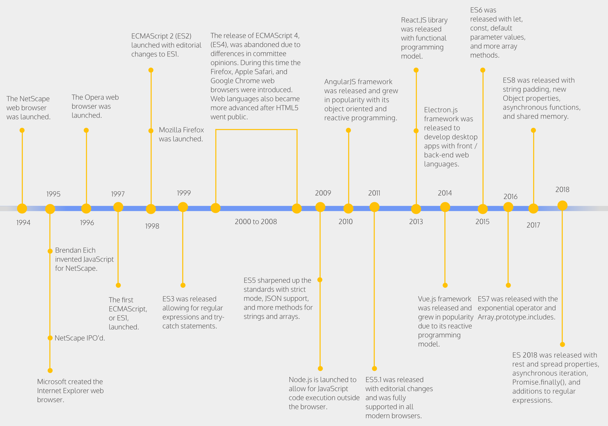

# JavaScript <codepen global enabled='true'></codepen> Learn the basics of JavaScript, a high-level, dynamic, untyped and interpreted programming language, and one of the three core technologies of the web. **You will need** * [Google Chrome][chrome] (recommended, any browser with developer tools will do) --- class: center, middle ## What is JavaScript? .breadcrumbs[<a href="#1">JavaScript</a>] > JavaScript is a high-level, **dynamic**, **untyped**, and interpreted programming language. > Alongside HTML and CSS, JavaScript is one of the three core technologies of World Wide Web. > JavaScript is **prototype**-based with **first-class functions**, making it a multi-paradigm language, supporting **object-oriented**, **imperative**, and **functional** programming styles. --- ### JavaScript is still evolving .breadcrumbs[<a href="#1">JavaScript</a> > <a href="#2">What is JavaScript?</a>] It has been standardized in the [ECMAScript][es] language specification. <img src='images/timeline.png' width='100%' /> * [**ECMAScript 2015** (also known as ECMAScript 6 or ES6)][es6] added iterators and for/of loops, Python-style [generators][js-generators] and generator expressions, [arrow functions][js-arrow-functions], binary data, typed arrays, collections (maps, sets and weak maps), [promises][js-promise], number and math enhancements, reflection, and [proxies][js-proxy]. * [**ECMAScript 2017**][es2017] added [async/await][js-async] and [shared memory and atomics][js-shared-memory]. * [**ECMAScript 2018**][es2018], [**ECMAScript 2019**][es2019], [**ECMAScript 2020**][es2020], [**ECMAScript 2021**][es2021] and [**ECMAScript 2022**][es2022] added [asynchronous iteration][js-async-iteration], [optional chaining][js-optional-chaining], [nullish coalescing][js-nullish-coalescing], [error cause][js-error-cause] and more. --- #### Yearly release schedule .breadcrumbs[<a href="#1">JavaScript</a> > <a href="#2">What is JavaScript?</a> > <a href="#3">JavaScript is still evolving</a>] ECMAScript standard moves to [yearly releases][es-yearly-releases]: <p class='center'></p> --- ### TC39 .breadcrumbs[<a href="#1">JavaScript</a> > <a href="#2">What is JavaScript?</a>] .grid-70[ ECMA International's [TC39][tc39] is a group of JavaScript developers, implementers, academics, and more, collaborating with the community to maintain and evolve the definition of JavaScript. Changes to the language are developed by way of a [process][tc39-process] which provides guidelines for evolving an addition from an idea to a fully specified feature, complete with acceptance tests and multiple implementations. There are five stages: a strawperson stage, and 4 "maturity" stages. The TC39 committee must approve acceptance for each stage. The [current proposals][tc39-proposals] in the various stages are available on GitHub. ] .grid-30[ ] --- ### ECMAScript 2015/ES6+ support .breadcrumbs[<a href="#1">JavaScript</a> > <a href="#2">What is JavaScript?</a>] There are features from JavaScript ES6 (or later versions) that may **not yet fully supported** on all browsers. Where backwards-compatilibity is important in client-side code running in the **browser**, you should stick with **ES5** or use a JavaScript compiler like [Babel][babel], a module bundler like [Webpack][webpack], or a language that compiles to JavaScript like [TypeScript][ts], to turn your ES6+ code into compatible ES5 code before releasing it. In server-side code running with the latest **Node.js** versions, most **ES6+** features are supported, including [ECMAScript modules (`import`/`export`)][js-imports] in [recent versions][node-imports]. --- class: center, middle ## JavaScript types .breadcrumbs[<a href="#1">JavaScript</a>] `boolean`, `null`, `number`, `string`, `symbol`, `undefined` --- ### JavaScript has 6 primitive data types .breadcrumbs[<a href="#1">JavaScript</a> > <a href="#7">JavaScript types</a>] .grid-70[ ```js let aString = "HEIG-VD"; let aNumber = 3.12; let aBoolean = true; let nullValue = null; let undefinedValue; let aSymbol = Symbol('foo'); console.log(typeof aString); // "string" console.log(typeof aNumber); // "number" console.log(typeof aBoolean); // "boolean" console.log(typeof nullValue); // "object" console.log(typeof undefinedValue); // "undefined" console.log(typeof aSymbol); // "symbol" // There is no integer type console.log(Number.isInteger(aNumber)); // false console.log(typeof 4); // "number" console.log(Number.isInteger(4)); // true // Symbols are unique identifiers console.log(Symbol('foo') == aSymbol); // false ``` ] .grid-30[ The types are: * String * Number * Boolean * Null * Undefined * Symbol (**ES6**) ] .container[ > Note that `null` is a type, but `typeof null === object`. > This is a [remnant][js-typeof-null] from the first version of JavaScript. ] --- ### JavaScript has **dynamic** objects .breadcrumbs[<a href="#1">JavaScript</a> > <a href="#7">JavaScript types</a>] .grid-60[ ```js // Let's create an object let person = { firstName: 'John', lastName: 'Doe' }; // We can dynamically add properties person.gender = 'male'; let property = 'zip'; person[property] = 1446; // And delete them delete person.firstName; // And list them for (const key in person) { console.log(key + ': ' + person[key]); } ``` ```txt lastName: John gender: male zip: 1446 ``` ] .grid-40[ Objects have **no class**, they are **dynamic bags** of properties. Every object has a **different list of properties**. ] --- ### Array are **objects** .breadcrumbs[<a href="#1">JavaScript</a> > <a href="#7">JavaScript types</a>] They are list-like objects with numeric keys. ```js // Let's create an array let fruits = [ 'apple', 'pear' ]; console.log(typeof fruits); // "object" // Iterate over it for (let i = 0; i < fruits.length; i++) { console.log('fruit ' + i + ' is ' + fruits[i]); } // fruit 0 is apple // fruit 1 is banana ``` We'll learn more about arrays later. --- ### JavaScript is **untyped** .breadcrumbs[<a href="#1">JavaScript</a> > <a href="#7">JavaScript types</a>] Values have a type, but **variables don't**. When you declare a variable, you don't specify a type. ```js let aVariable = "aString"; console.log(typeof aVariable); // "string" aVariable = 3.12; console.log(typeof aVariable); // "number" aVariable = true; console.log(typeof aVariable); // "boolean" aVariable = [ 1, 2, 3 ]; console.log(typeof aVariable); // "object" aVariable = { aProperty: "aValue" }; console.log(typeof aVariable); // "object" ``` The type can **change** over time. --- ### Comparing values with `==` or `===` .breadcrumbs[<a href="#1">JavaScript</a> > <a href="#7">JavaScript types</a>] The `==` operator **loosely** compares values for equality: ```js console.log(1 == true); // true console.log(2.3 == "2.3"); // true console.log(false == []); // true ``` The `===` operator **strictly** compares for equality: ```js console.log(1 === true); // false console.log(2.3 === "2.3"); // false console.log(false === []); // false console.log(42 === 42); // true ``` --- ### Falsy values .breadcrumbs[<a href="#1">JavaScript</a> > <a href="#7">JavaScript types</a>] The following values all **evaluate to false**: `false`, `0`, `""`, `null`, `undefined`, `NaN`. ```js if (0) { console.log('Zero is truthy'); } else { console.log('Zero is falsy'); // "Zero is falsy" } ``` This can cause weird bugs sometimes: ```js let countdown = ""; if (countdown == 0) { console.log('We are done'); // "We are done" } else { console.log('We are not done'); } ``` Therefore, it's recommended to always use the triple-equal `===` operator for equality comparisons. --- class: center, middle ## JavaScript supports first-class functions .breadcrumbs[<a href="#1">JavaScript</a>] > "A programming language is said to have [first-class functions][first-class-functions] if it treats functions as first-class citizens. > Specifically, this means the language supports **passing functions as arguments** to other functions, **returning them** as the values from other functions, and **assigning them to variables** or **storing them in data structures**." --- ### Storing functions in variables or data structures .breadcrumbs[<a href="#1">JavaScript</a> > <a href="#14">JavaScript supports first-class functions</a>] A JavaScript function isn't a special construct linked to a class like in Java. It can be stored in variables like any other value. ```js // Store a function in a variable let hello = function(name) { console.log('Hello ' + name + '!'); }; // The hello variable now holds a function console.log(typeof hello); // "function" // You can call it hello('World'); // "Hello World!" // Store a function as an object's property let anObject = { aProperty: function() { return 42; } }; // That property now holds a function as its value console.log(typeof anObject.aProperty); // "function" let value = anObject.aProperty(); console.log(value); // 42 ``` --- ### Returning functions from a function .breadcrumbs[<a href="#1">JavaScript</a> > <a href="#14">JavaScript supports first-class functions</a>] <codepen except='1'></codepen> ```js // Let's define a function that returns a function function makeSquareFunction() { return function(n) { return n * n; }; } // By calling it, we get a function let square = makeSquareFunction(); console.log(typeof square); // "function" let result = square(5); console.log(result); // 25 ``` Note that functions can be **anonymous** (i.e. they have no name), like the function returned from `makeSquareFunction`: ```js return function(n) { return n * n; }; ``` --- ### Passing functions as arguments .breadcrumbs[<a href="#1">JavaScript</a> > <a href="#14">JavaScript supports first-class functions</a>] A function can take another function as an argument. ```js function hello(name) { console.log('Hello ' + name + '!'); } function callIt(func) { func('World'); } callIt(hello); // "Hello World!" ``` --- ### Transforming data with functions .breadcrumbs[<a href="#1">JavaScript</a> > <a href="#14">JavaScript supports first-class functions</a>] These properties of functions enable powerful [**functional programming**][func-prog] patterns: ```js // Define an array of people objects let people = [ { firstName: 'John', lastName: 'Doe' }, { firstName: 'John', lastName: 'Smith' }, { firstName: 'Deborah', lastName: 'Smith' } ]; // Define a function that takes a person and returns their last name function getName(person) { return person.lastName; } // The "map" function of arrays returns an array of the same size, // but with each element "mapped" or "transformed" using the provided // function let lastNames = people.map(getName); // We transformed an array of people into an array of last names console.log(lastNames); // [ "Doe", "Smith", "Smith" ] ``` --- ### Arrow functions *(ES6+)* .breadcrumbs[<a href="#1">JavaScript</a> > <a href="#14">JavaScript supports first-class functions</a>] <codepen disabled></codepen> Modern JavaScript has a new additional syntax for functions which you will encounter more and more on the web: ```js let divideFunc = (nb1, nb2) => nb1 / nb2; ``` This is the new **ES6** syntax for functions called **arrow functions**. The example above is (mostly) equivalent to writing: ```js let divideFunc = function(nb1, nb2) { return nb1 / nb2; }; ``` --- #### Arrow function arguments .breadcrumbs[<a href="#1">JavaScript</a> > <a href="#14">JavaScript supports first-class functions</a> > <a href="#19">Arrow functions *(ES6+)*</a>] <codepen except='0'></codepen> Let's see how an arrow function is written: ```js `(nb1, nb2)` => nb1 / nb2 ``` The part left of the `=>` represents the **function's arguments**. If your function has **only one** argument, you can **omit** the parentheses: ```js let squareroot = `number` => Math.sqrt(number); console.log(squareroot(4)); // 2 ``` But if your function has **no arguments**, you **MUST** add **empty parentheses**: ```js // No argument let callback = `()` => console.log("Timeout finished"); setTimeout(callback, 1000); ``` --- #### Body of arrow functions .breadcrumbs[<a href="#1">JavaScript</a> > <a href="#14">JavaScript supports first-class functions</a> > <a href="#19">Arrow functions *(ES6+)*</a>] <codepen except='0'></codepen> ```js (nb1, nb2) => `nb1 / nb2` ``` The part right of the `=>` is **the body** of the function; note the absence of brackets (`{}`). The `return` keyword is **implicit** with one-line bodies that have no brackets: ```js // This arrow function will return the square root of the number let squareroot = number => `Math.sqrt(number)`; console.log(squareroot(4)); // 2 ``` If the body has **more than one line**, you **MUST add brackets** `{}` around it (_and use the `return` keyword if necessary_): ```js let square = number => `{` `let result = number * number;` `return result;` `}`; console.log(square(5)); // 25 ``` --- ## Constructors .breadcrumbs[<a href="#1">JavaScript</a>] Though JavaScript doesn't really have classes **(until ES6)**, any function can behave like a **constructor** and create an object. For a function to act as a constructor, you don't have to declare it differently than any other function. All you have to do is call the function with `new` like in most object-oriented languages: ```js function Starship() { } let discovery = new Starship(); console.log(discovery); // {} console.log(discovery instanceof Starship); // true ``` The `discovery` variable stores a new (and empty) object, of type `Starship`. > Note that there's **nothing special** about this function: calling it with `new` is what makes it a constructor. > It's simply a **convention** to put the first letter in uppercase. --- ### The `this` keyword .breadcrumbs[<a href="#1">JavaScript</a> > <a href="#22">Constructors</a>] Calling a **constructor** function with `new` give you access to `this` in its body. That variable refers to the **object that is being created**. You can modify this object, for example to attach values you receive from arguments to it: ```js function Starship(name, designation) { * this.name = name; * this.designation = designation; } let discovery = new Starship("Discovery", "NCC-1031"); console.log(discovery); // Starship {name: "Discovery", designation: "NCC-1031"} ``` > It's possible to implement class-like structures with **constructor functions** and **prototypes**. > JavaScript **ES6** also adds **actual classes** (based on **prototypes**). > But that's outside the scope of this tutorial. --- class: center, middle ## Variables .breadcrumbs[<a href="#1">JavaScript</a>] --- ### Defining variables .breadcrumbs[<a href="#1">JavaScript</a> > <a href="#24">Variables</a>] <codepen disabled></codepen> There are three ways to define a variable in JavaScript: ```js // ES5 var aString = 'foo'; // ES6 let aNumber = 42; const aBoolean = true; ``` Note that `var` always works, but `let` and `const` are only available in **ES6** and later versions. --- ### Dynamic or constant variables .breadcrumbs[<a href="#1">JavaScript</a> > <a href="#24">Variables</a>] Variables declared with `var` or `let` are dynamic. Their value can **change** over time. ```js var aString = 'foo'; let aNumber = 24; console.log(aString); // "foo" console.log(aNumber); // 24 aString = 'bar'; aNumber = 25; console.log(aString); // "bar" console.log(aNumber); // 25 ``` Variables declared with `const` cannot change. They are **constants**: ```js const theMeaningOfLife = 42; theMeaningOfLife = 43; // TypeError: Assignment to constant variable. ``` --- ### The function scope .breadcrumbs[<a href="#1">JavaScript</a> > <a href="#24">Variables</a>] Variables declared with `var` in a function are visible **everywhere in that function**. Note that they are **NOT block-scoped** like in most languages. ```js function logThings(things) { var numberOfThings = things.length; for (var i = 0; i < numberOfThings; i++) { var thing = things[i]; console.log(thing); } console.log('Number of things: ' + numberOfThings); console.log('Last thing: ' + thing); console.log('Iterator: ' + i); } logThings([ 'apple', 'banana', 'pear' ]); // "apple" // "banana" // "pear" // "Number of things: 3" // "Last thing: pear" // "Iterator: 3" ``` --- ### The block scope .breadcrumbs[<a href="#1">JavaScript</a> > <a href="#24">Variables</a>] The `let` and `const` keywords introduced in **ES6** create **block-scoped** variables, only visible in the block, statement or expression on which they are used. ```js function logThings(things) { const numberOfThings = things.length; for (let i = 0; i < numberOfThings; i++) { let thing = things[i]; console.log(thing); } console.log('Number of things: ' + numberOfThings); console.log('Last thing: ' + thing); } logThings([ 'apple', 'banana', 'pear' ]); // "apple" // "banana" // "pear" // "Number of things: 3" // ReferenceError: thing is not defined ``` It is recommended to use them in **ES6-compatible** environments. --- ### The (evil) global scope .breadcrumbs[<a href="#1">JavaScript</a> > <a href="#24">Variables</a>] Variables declared with `var` outside of any function are **global variables**, accessible anywhere. ```js // A global variable var name = 'World'; function hello() { // We can use "name" even though it's not an argument // of the function, because it's global console.log('Hello ' + name + '!'); // It's a bad idea to use them because anyone can // change their value and mess up your program name = 'Bob'; } hello(); // "Hello World!" hello(); // "Hello Bob!" ``` You should **almost never use them**. --- #### When it's okay to use the global scope .breadcrumbs[<a href="#1">JavaScript</a> > <a href="#24">Variables</a> > <a href="#29">The (evil) global scope</a>] In an **HTML page**, all loaded scripts share the same global scope. In that context, ES5 libraries expose global variables so that your code can use them. For example, jQuery provides the **$** global variable for easy access. In a **Node.js script**, the global scope is limited to the file you're in, so it's okay to use it. If you're not writing either one of those, just **don't use global variables**. --- #### Oops, global scope .breadcrumbs[<a href="#1">JavaScript</a> > <a href="#24">Variables</a> > <a href="#29">The (evil) global scope</a>] If you forget the `var`, `let` or `const` keyword, JavaScript will not complain. It will simply consider the variable global. ```js // Let's declare a global variable var i = 42; // And a function that logs each thing in the passed array function logThings(things) { // Oops, we forgot the "var" or "let" before "i" * for (i = 0; i < things.length; i++) { console.log(things[i]); } } var fruits = [ 'apple', 'banana', 'pear' ]; logThings(fruits); // Oops, we've modified something outside of the function console.log(i); // 3 ``` Just **don't do it**. --- ## String syntax .breadcrumbs[<a href="#1">JavaScript</a>] <codepen disabled></codepen> In JavaScript, you (now) have 3 ways to use strings: ```js // With single quotes: ' let string = 'I\'m your "Wurst" nightmare: ' + worstNightmare; ``` You have to **escape** all other single quotes, and use `+` to concatenate. ```js // With double quotes: " let string = "I'm your \"Wurst\" nightmare: " + worstNightmare; ``` You have to escape all other double quotes, and use `+` to concatenate. **ES6** also adds the new **template literals**: ```js // With backticks (template literals): ` let string = \`I'm your "Wurst" nightmare: ${worstNightmare}`; ``` You have to escape all other backticks, but you can use single and double quotes without escaping. To insert variables inside the string, use `${variable}`. (To do a back-tick use `Shift-^`, then hit the `Space` bar.) --- ## Manipulating arrays .breadcrumbs[<a href="#1">JavaScript</a>] Arrays in JavaScript are objects and provide you with a [boatload of methods][array-functions] to manipulate items: Function | Effect :------- | :----- `.forEach()` | Calls a function for every element in the array `.concat()` | Concatenates two arrays into one, and returns this new array `.find()` | Finds the **first** element that passes a provided test function `.pop()` | Removes the **last** element, and returns it (`.shift()` does the same but for the **first** element) `.push()` | Adds new elements to **the end** of an array (`.unshift()` does the same but adds them to the **beginning** of the array) `.slice()` | Returns **a portion** of the array `.reverse()` | Reverses the order of the elements in an array (**this modifies the original array**) --- ### Examples .breadcrumbs[<a href="#1">JavaScript</a> > <a href="#33">Manipulating arrays</a>] `.forEach()` ```js let crew = ["Jonathan", "T'Pol", "Trip", "Malcolm", "Sato", "Travis"]; crew.forEach(function(element, index) { console.log(\`Hello, my name is ${element}, and I'm n°${index}`); }); ``` `.find()` ```js let ages = [3, 10, 19, 25]; let adult = ages.find(function(age) { return age >= 18; }); console.log(adult); // 19 ``` `.slice()` ```js let starships = ["NX-01", "NCC-1701", "NCC-1701 D", "NCC-1764", "NCC-74656"]; // Start at position 0, included, and end before position 3, excluded. let enterprises = starships.slice(0, 3); console.log(enterprises); // ["NX-01", "NCC-1701", "NCC-1701 D"] ``` --- ### The `for...of` loop .breadcrumbs[<a href="#1">JavaScript</a> > <a href="#33">Manipulating arrays</a>] **ES6**'s `for...of` loop is a new, simpler way of **iterating over all elements** of an array: ```js let fruits = [ 'apple', 'pear' ]; // Classic "for" loop for (let i = 0; i < fruits.length; i++) { let fruit = fruits[i]; console.log('fruit: ' + fruit); } // Equivalent "for...of" loop for (let fruit of fruits) { console.log('fruit: ' + fruit); } ``` The `for...of` loop is actually not limited to arrays: it can iterate over any [iterable object][js-iterable] such as Map, Set, etc. --- class: center, middle ## Destructuring assignment .breadcrumbs[<a href="#1">JavaScript</a>] The destructuring assignment syntax makes it possible to **unpack values from arrays**, or **properties from objects**, into **distinct variables**. --- ### Array destructuring .breadcrumbs[<a href="#1">JavaScript</a> > <a href="#36">Destructuring assignment</a>] .grid-50[ Basic variable assignment. ```js let foo = [ 'one', 'two', 'three' ]; *let [ one, two, three ] = foo; console.log(one); // "one" console.log(two); // "two" console.log(three); // "three" ``` ] .grid-50[ Equivalent without destructuring. ```js let foo = [ 'one', 'two', 'three' ]; *let one = foo[0]; *let two = foo[1]; *let three = foo[2]; console.log(one); // "one" console.log(two); // "two" console.log(three); // "three" ``` ] .container[ You can also use destructuring separately from the variables' declaration: ```js let foo = [ 'one', 'two', 'three' ]; let one, two, three; *[ one, two, three ] = foo; console.log(one); // "one" console.log(two); // "two" console.log(three); // "three" ``` ] --- #### Array destructuring features & tricks .breadcrumbs[<a href="#1">JavaScript</a> > <a href="#36">Destructuring assignment</a> > <a href="#37">Array destructuring</a>] Here's a few things you can do with array destructuring: ```js // Default values let a, b; *[ a=5, b=7 ] = [ 1 ]; console.log(a); // 1 console.log(b); // 7 // Swapping variables let c = 1; let d = 3; *[c, d] = [d, c]; console.log(c); // 3 console.log(d); // 1 // Ignoring values *let [ e, f ] = [ 'foo', 'bar', 'baz' ]; console.log(e); // "foo" console.log(f); // "bar" // Assigning the rest to a variable *let [ g, ...h ] = [ 1, 2, 3 ]; console.log(g); // 1 console.log(h); // [2, 3] ``` --- ### Object destructuring .breadcrumbs[<a href="#1">JavaScript</a> > <a href="#36">Destructuring assignment</a>] .grid-50[ Basic variable assignment. ```js let o = { p: 42, q: true }; *let { p, q } = o; console.log(p); // 42 console.log(q); // true ``` ] .grid-50[ Equivalent without destructuring. ```js let o = { p: 42, q: true }; *let p = o.p; *let q = o.q; console.log(p); // 42 console.log(q); // true ``` ] .container[ You can also use destructuring separately from the variables' declaration (but you have to put it within parentheses): ```js let o = { p: 42, q: true }; let p, q; *({ p, q } = o); console.log(p); // 42 console.log(q); // true ``` ] --- #### Object destructuring features & tricks .breadcrumbs[<a href="#1">JavaScript</a> > <a href="#36">Destructuring assignment</a> > <a href="#39">Object destructuring</a>] Here's a few things you can do with object destructuring: ```js // Assigning to new variable names let o = { p: 42, q: true }; *let { p: foo, q: bar } = o; console.log(foo); // 42 console.log(bar); // true // Default values *let { a = 10, b = 5 } = { a: 3 }; console.log(a); // 3 console.log(b); // 5 // Unpacking fields from function parameters *function userId({id}) { return id; } let user = { id: 42, name: 'Bob' }; console.log('userId: ' + userId(user)); // "userId: 42" ``` --- class: center, middle ## Null-safe operators .breadcrumbs[<a href="#1">JavaScript</a>] [`null`: breaking programs since 1964](https://www.lucidchart.com/techblog/2015/08/31/the-worst-mistake-of-computer-science/) --- ### Optional chaining .breadcrumbs[<a href="#1">JavaScript</a> > <a href="#41">Null-safe operators</a>] The [optional chaining operator `?.`](https://developer.mozilla.org/en-US/docs/Web/JavaScript/Reference/Operators/Optional_chaining) enables you to read the value of a property located deep within a chain of connected objects without having to check that each reference in the chain is valid: ```js const adventurer = { name: 'Alice', cat: { name: 'Dinah' } }; // Old style with a ternary operator: const dogName = adventurer.dog ? adventurer.dog.name : undefined; console.log(dogName); // undefined // With optional chaining (since ECMAScript 2020): const fishName = adventurer.fish?.name; console.log(fishName); // undefined ``` --- ### Nullish coalescing operator .breadcrumbs[<a href="#1">JavaScript</a> > <a href="#41">Null-safe operators</a>] The [nullish coalescing operator `??`](https://developer.mozilla.org/en-US/docs/Web/JavaScript/Reference/Operators/Nullish_coalescing_operator) is a logical operator that returns its right-hand side operand when its left-hand side operand is null or undefined, and otherwise returns its left-hand side operand: ```js // Old style: const foo = null || "default string"; console.log(foo); // "default string" // With the nullish coalescing operator (since ECMAScript 2020): const bar = null ?? "default string"; console.log(bar); // "default string" const baz = 0 ?? 42; console.log(baz); // 0 // Problems with the old style: const qux = 0 || 42; console.log(qux); // 42 ``` --- class: center, middle ## JSON .breadcrumbs[<a href="#1">JavaScript</a>] --- ### JSON who? .breadcrumbs[<a href="#1">JavaScript</a> > <a href="#44">JSON</a>] [JSON][json] stands for **J**ava**S**cript **O**bject **N**otation. It is a syntax that is used to **represent JavaScript objects** with **text**, and has become one of the world's most popular data-interchange formats. JSON can only describe the following types: | Types | Notation | | :------- | :---------------------- | | String | `"text"` | | Number | `2` | | Boolean | `true`, `false` | | Null | `null` | | Array | `[ "value1", "value2" ]` | | Object | `{ "property1": "value1", "property2": "value2" }` | Object properties and strings **MUST be double-quoted**. Note that you **cannot** put a JavaScript function in a JSON object. --- ### Example .breadcrumbs[<a href="#1">JavaScript</a> > <a href="#44">JSON</a>] Here is an example of a **JavaScript object**, and its **description in JSON**: .grid-50[ ```js let starship = { designation: "NX-01", crew: 83, captain: { firstname: "Jonathan", lastname: "Archer", activeService: true }, species: [ "human", "dog", "denobulan", "vulcan" ], * "warp.factor": 5, * "cloak": null }; ``` You *can* put double quotes around property names in JavaScript, but don't **have to** unless it's an **invalid identifier** (e.g. the `.` character is invalid in a variable name). ] .grid-50[ ```json { "designation": "NX-01", "crew": 83, "captain": { "firstname": "Jonathan", "lastname": "Archer", "activeService": true }, "species": [ "human", "dog", "denobulan", "vulcan" ], "warp.factor": 5, "cloak": null } ``` The double quotes around property names are **required** in JSON. ] --- ### Using JSON .breadcrumbs[<a href="#1">JavaScript</a> > <a href="#44">JSON</a>] **Manually** declaring a JavaScript object in JSON (or the opposite) can be quite tedious, especially with deep, complex objects. Fortunately, JavaScript provides the **global `JSON` object** which can do it for you. To transform a **JavaScript object to JSON text**, use `JSON.stringify()`: ```js let crew = {name: "T'Pol", species: "Vulcan", station: "Science Officer"}; *let crewJson = JSON.stringify(crew); console.log(crewJson); // "{"name":"T'Pol","species":"Vulcan","station":"Science Officer"}" ``` To do the opposite, that is create a JavaScript object from JSON text, use `JSON.parse()`: ```js let crewJson = '{"name": "Travis", "species": "Human", "station": "Helm"}'; *let crew = JSON.parse(crewJson); console.log(crew); // Object {name: "Travis", species: "Human", station: "Helm"} ``` --- ## Resources .breadcrumbs[<a href="#1">JavaScript</a>] * A re-introduction to JavaScript https://developer.mozilla.org/en-US/docs/Web/JavaScript/A_re-introduction_to_JavaScript * Inheritance and the prototype chain https://developer.mozilla.org/en-US/docs/Web/JavaScript/Guide/Inheritance_and_the_prototype_chain * Introduction to Object-Oriented JavaScript https://developer.mozilla.org/en-US/docs/Web/JavaScript/Introduction_to_Object-Oriented_JavaScript * JavaScript objects in detail http://javascriptissexy.com/javascript-objects-in-detail * Complete list of native Array methods https://www.w3schools.com/jsref/jsref_obj_array.asp [array-functions]: https://www.w3schools.com/jsref/jsref_obj_array.asp [babel]: http://babeljs.io [chrome]: https://www.google.com/chrome/ [es]: https://en.wikipedia.org/wiki/ECMAScript [es-yearly-releases]: https://thenewstack.io/whats-new-es2016/ [es6]: http://es6-features.org/ [es2017]: https://2ality.com/2016/02/ecmascript-2017.html [es2018]: https://2ality.com/2017/02/ecmascript-2018.html [es2019]: https://2ality.com/2018/02/ecmascript-2019.html [es2020]: https://2ality.com/2019/12/ecmascript-2020.html [es2021]: https://2ality.com/2020/09/ecmascript-2021.html [es2022]: https://2ality.com/2022/06/ecmascript-2022.html [ex-function-as-argument]: http://codepen.io/AlphaHydrae/pen/dNBpPv?editors=0010 [first-class-functions]: https://en.wikipedia.org/wiki/First-class_function [func-prog]: https://en.wikipedia.org/wiki/Functional_programming [js-arrow-functions]: https://developer.mozilla.org/en-US/docs/Web/JavaScript/Reference/Functions/Arrow_functions [js-async]: https://developer.mozilla.org/en-US/docs/Web/JavaScript/Reference/Statements/async_function [js-async-iteration]: https://developer.mozilla.org/en-US/docs/Web/JavaScript/Reference/Statements/for-await...of [js-destructuring-assignment]: https://developer.mozilla.org/en-US/docs/Web/JavaScript/Reference/Operators/Destructuring_assignment [js-error-cause]: https://2ality.com/2022/06/ecmascript-2022.html#error.cause [js-generators]: https://developer.mozilla.org/en-US/docs/Web/JavaScript/Guide/Iterators_and_Generators [js-imports]: https://developer.mozilla.org/en-US/docs/Web/JavaScript/Reference/Statements/import [js-iterable]: https://developer.mozilla.org/en-US/docs/Web/JavaScript/Reference/Iteration_protocols [js-loops]: https://developer.mozilla.org/en-US/docs/Web/JavaScript/Guide/Loops_and_iteration [js-nullish-coalescing]: https://developer.mozilla.org/en-US/docs/Web/JavaScript/Reference/Operators/Nullish_coalescing_operator [js-optional-chaining]: https://developer.mozilla.org/en-US/docs/Web/JavaScript/Reference/Operators/Optional_chaining [js-promise]: https://developer.mozilla.org/en-US/docs/Web/JavaScript/Reference/Global_Objects/Promise [js-proxy]: https://developer.mozilla.org/en-US/docs/Web/JavaScript/Reference/Global_Objects/Proxy [js-shared-memory]: https://developer.mozilla.org/en-US/docs/Web/JavaScript/Reference/Global_Objects/SharedArrayBuffer [js-typeof-null]: http://www.2ality.com/2013/10/typeof-null.html [js-symbol]: https://developer.mozilla.org/en-US/docs/Glossary/Symbol [json]: http://www.json.org/ [foreach-doc]: https://www.w3schools.com/jsref/jsref_forEach.asp [concat-doc]: https://www.w3schools.com/jsref/jsref_concat_array.asp [find-doc]: https://www.w3schools.com/jsref/jsref_find.asp [node-imports]: https://nodejs.org/api/esm.html#esm_modules_ecmascript_modules [pop-doc]: https://www.w3schools.com/jsref/jsref_pop.asp [push-doc]: https://www.w3schools.com/jsref/jsref_push.asp [slice-doc]: https://www.w3schools.com/jsref/jsref_slice_array.asp [reverse-doc]: https://www.w3schools.com/jsref/jsref_reverse.asp [tc39]: https://tc39.es [tc39-process]: https://tc39.es/process-document [tc39-proposals]: https://github.com/tc39/proposals#readme [ts]: https://www.typescriptlang.org [webpack]: https://webpack.js.org/